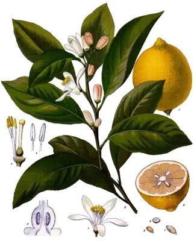

pranet · 出典付きの植物図鑑
レモン
Citrus limon (L.) Osbeck · Rutaceae

レモン は、ミカン科ミカン属の常緑高木、またはその果実のこと。柑橘類の一つであり、中でも主に酸味や香りを楽しむ、いわゆる香酸柑橘類に属する。
出典: Wikipedia 日本語版「レモン」 · CC BY-SA 4.0
異名: Citrus adamii Risso, Citrus aurata Risso, Citrus bergamia (Risso) Risso & Poit., Citrus bergamota Raf., Citrus dimorphocarpa Lush., Citrus gordonia (Risso) Risso, Citrus limetta Risso, Citrus limettioides Yu.Tanaka, Citrus limodulcis D.Rivera, Obón, F.Méndez & S.Ríos, Citrus limonelloides Hayata, Citrus limonia Osbeck, Citrus limonum Risso, Citrus lumia Risso, Citrus mellarosa Risso, Citrus meyeri Yu.Tanaka, Citrus meyerii Yu.Tanaka, Citrus sarbati Tanaka, Citrus sarcodactylis Hoola van Nooten, Citrus volkameriana, Citrus volkameriana Pasq.
同定や利用は自己責任でお願いします。この図鑑だけを根拠に野生の植物を食べないでください。
出典
- 学名: World Flora Online Plant List 2026-06 · CC0 1.0
- 名前: Wikipedia の記事名と Wikidata · CC0 1.0（Wikidata）。記事名は事実
- 説明: Wikipedia 日本語版「レモン」 · CC BY-SA 4.0
- 食用・毒性: World Checklist of Useful Plant Species (Diazgranados et al. 2020, RBG Kew) · CC BY 4.0
このページは pranet のデータから自動生成しています。コードは MIT、データは項目ごとのライセンス（説明）。